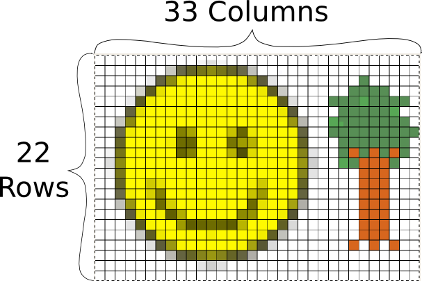
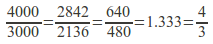
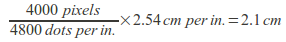
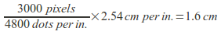
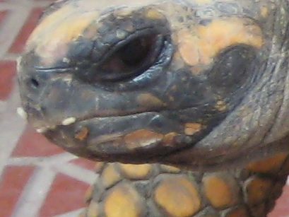
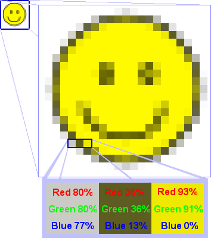

<h1 class="western">Unit One - Photos</h1>

<p style="margin-bottom: 0in;">Tools: Gimp, Photoshop <br></p>

<p style="margin-bottom: 0in;">Goals: Cropping/Re-sizing, Red-Eye
removal, Layers, Image Contrast, Skin Corrections</p>

<p style="margin-bottom: 0in;">Time: 15 class hours</p>

<p style="margin-bottom: 0in;"><br>
</p>

<p style="margin-bottom: 0in;">For this unit we will learn some basics
about digital images and photos, then some simple photo editing in
the GNU Image Manipulation Program (Gimp), finally we will explore
Photoshop to see how to do the same things, where available. </p>

<h2 class="western">Photos</h2>

<p>Photo files are stored in what is called a "raster" format. This
means that the image is composed of a grid of points (in rows
and columns). These points are called pixels, and they contain the
color for that point. The number of rows and columns that make up
the grid are called the dimensions. A picture that has 33 Columns
(width) and 22 Rows (height) has dimensions of 33x22, and has a total
of 726 pixels. In general the dimensions of digital images are
always written in the form of "width x height".</p>

<br>

<p>Modern digital cameras have much, much higher dimensions. They
are often referred based on how many <b>millions</b><span style="font-weight: normal;">
of pixels or "megapixels" they have. Some examples are:</span></p>

<p style="font-weight: normal;">640x480 = 307200 pixels = 0.3
megapixels<br>
1024x768 = 786432 pixels = 0.8 megapixels<br>
1280x960 =
1228800 pixels = 1.2 megapixels <br>
1600x1200 = 1920000 pixels = 1.9
megapixels<br>
2842x2136 = 6070512 pixels = 6 megapixels<br>
4000x3000
= 12000000 pixels = 12 megapixels</p>

<p style="font-weight: normal;">Looking at all these, they have
something in common, if the first number is divided by the second
number, they all approximately equal 1.33. The lowest ratio that
equals 1.33 is 4/3, so this format of images is said to have a 4:3
ratio. </p>

<br>

<p style="font-weight: normal;">This is usually the standard for
photography, when the camera is held normally - this is also known as a "landscape" orientation. When the camera is held rotated to the side, this ratio changes to 3:4 and is called "portrait" orientation.&nbsp; Other resolutions will be looked at more in the video
unit. </p>

<p><a href="http://en.wikipedia.org/wiki/2D_computer_graphics">http://en.wikipedia.org/wiki/2D_computer_graphics</a></p>

<p>The reason that cameras have grown the number of megapixels they
use, is because that (with everything else being equal) larger
dimensions make the image look better, especially when you print it
out. A good printer can print photographs at 4800 dots per inch or
dpi. In this case "inches" (1in = 2.45cm) and "dots" (equal
to a pixel) are used because of their history in the printing
industry. </p>

<p>This means that a 12 megapixel image (4000x3000) could be printed
out to a 2.1x1.6cm image and every pixel would be visible. </p>

<br>

<p>However, if it were printed to a 4.2x3.2cm image, then every pixel
would be represented by four dots on the paper. If the sizes were
doubled again to 8.4x6.4cm then every pixel would be represented by
16 dots on the paper. This starts to become a problem when you have
an image without that many pixels in it and want to print (or display
it on a screen) as a large image. At some point, the individual
pixels become easily visible on the printed image, and that can give
it a very blocky and unnatural feeling. </p>

<p>The pictures below are both the same piece of an large image taken
of a tortoise. The photo on the top is from the full size 12
megapixel (4000x3000) image. The photo on the bottom was taken at a
much lower dimension of 640x480. Notice how the pixels of the image
are clearly visible in the lower image and it doesn't look clear.</p>

<br>
<br>
<br>

<p>As a rule of thumb, it is important to keep the best possible
image (most pixels), at least while working with it to edit. The
section on cropping and re-sizing will cover more of the trade-offs
that can be made when getting a picture ready to print or put on the
Internet. </p>
<h3 class="western">Channels</h3>
<p>In a photograph, one pixel can represent many different colors. To
express this in a computer, pixels are represented with different
"channels" for the different colors. A typical image will have
three channels: Red, Green, and Blue, for images without color, they
will have a single channel (different shades of grey). Each channel
states how strong that color is, for example a pixel that has very
strong red channel and very weak green and blue channels would show
up as red. A pixel where all three channels are very strong would be
close to white, and where they are all weak, close to black. <br>
</p>
<br>
<p style="text-align: center;"> see <span class="link">Dot for Dot</span>
        for more information.</p>
<p> </p>
<p>The following image is an example of pixels and color channels.
The original image is the tiny face in the upper left corner. In the
second, enlarged version of the face, you can see the individual
pixels of the image, arranged in rows and columns, that make up the
image. Then in the bottom, even more enlarged segment, you can see
three pixels that make up a small area in the bottom-left corner of
the image. This segment has the values for the Red, Green, and Blue
channels written over the top of each pixel.</p>
<br>
<p style="text-align: center;"></p>
<p> </p>
<p>In this case we can see that to make a medium-grey color we turn
the Red channel up to 80% of its full intensity, the Green channel
also up to 80%, and the Blue channel to 77%. Notice that all three
of these are above 50%, so in all the channel is fairly
bright....this grey color is a lot closer to white than it is to
black. Next, to get a dingy brown, we would put the red and green
channels to 36% and the blue channel only to 13%. Because all these
are significantly less than 50%, the overall color is dark and
getting closer to black. Finally, to get a yellow, we turn the red
and green channels almost all the way up (if we wanted a "true"
yellow we would turn them all the way up) and leave the blue set at
zero. </p>
<p><br>
<br>
</p>
<p>Try out for yourself adjusting the amounts of Red Green and Blue
in each channel and see what colors you can come up with.</p>
<p><a href="http://developer.yahoo.com/yui/examples/slider/slider-rgb_clean.html">http://developer.yahoo.com/yui/examples/slider/slider-rgb_clean.html</a></p>
<p><br>
<br>
</p>
<p>Some raster formats also have a channel called "Alpha" that
specifies how bright the pixel is. If the alpha channel is low, then
it would be possible for an image that is stacked behind the one
being show to show through. This is called transparency. If there
is nothing behind the image, then the default is usually black. </p>
<h3 class="western">File Types</h3>
<b>Photo Size</b>
<p>For a typical photograph, each of the three (Red, Green, and Blue)
channels are represented by one byte of data for each pixel. This
means that it requires three bytes of data for each pixel, this is
often referred to as 24 bit color (24 bits, because 8 bits equals 1
byte and there are three bytes). Because each byte can hold 2^8 or
256 different values, each channel can have 256 different levels of
that color (1/256 or 0.39% change per level if everything is done
evenly). You may have noticed that the R G and B values on the
demonstration we used in the channels section only had 256 different
options, if you don't remember, go back and check it out now:</p>
<p><a href="http://developer.yahoo.com/yui/examples/slider/slider-rgb_clean.html">http://developer.yahoo.com/yui/examples/slider/slider-rgb_clean.html</a></p>
<p>Because there are three different channels, that means each pixel
can represent 256x256x256 colors or over 16 million different color
combinations. That's a lot more than even the largest box of
crayons. </p>
<p>For an 12 megapixel image from a modern camera, this means that it
would require 36 Megabytes (MB) of storage space! That's a lot when
you go out with your camera and want to take a bunch of pictures. If
you have a 1 Gigabyte (GB) memory card for your camera, that would
only allow you to store about 30 images. </p>
<p>Because of the huge size of files that just contain the pixels,
people have come up with various ways of compressing images into
smaller files. These can be put into two different groups: Lossless
and Lossy. </p>
<p><b>Lossless Compression </b>
</p>
<p>Lossless compression takes the files and finds ways to
mathematically make them smaller, in a way that can be completely
un-done. The easiest way to do this is to run the image through a
general compression tool like zip. Zip is a tool that is available
on all computers, that goes through any file (not just images) and
finds ways to make it smaller. One simple way this is done is if
there are many pixels in an area that are the same color, there can
be an instruction that when the image is drawn to color that whole
area in the correct color. That instruction telling what the
computer to do can be hundreds of times smaller than the amount of
space it would require to store all the pixels in the area. There
are many other ways to do this, but they are generally very
complicated and beyond the scope of this material.</p>
<p><a href="http://en.wikipedia.org/wiki/Lossless_data_compression">http://en.wikipedia.org/wiki/Lossless_data_compression</a></p>
<p><b>Lossy Compression </b>
</p>
<p>Lossy compression is different in that once a file is compressed
there is no way to get back the exact same file, some detail is
always lost. Since images are made of millions of pixels each
possible of representing millions of different colors, there is some
room for removing detail before the human eye would notice any
difference. This can be done with a combination of the lossless
compression methods, as well as things like assuming that a color of
one pixel is similar to the pixels surrounding it, and many more
complicated methods. Also beyond the scope of this material. </p>
<p>Below are three examples which illustrate lossy compression. The
example on the left is the original and was compressed with loss-less
compression. The middle picture was compressed with lossy
compression, which was set to not loose very much data. The image on
the right used lossy compression with very aggressive settings. It
made a much smaller file size than the middle one (1.1KB vs 9.4 KB)
but obviously the compression removed parts of the image that are
important for making it look good.&nbsp; <br>
</p>
<br>
<p style="text-align: center;">&nbsp;</p>
<p> </p>
<p><a href="http://en.wikipedia.org/wiki/Lossy_compression">http://en.wikipedia.org/wiki/Lossy_compression</a></p>
<p><b>File Storage</b></p>
<p>There are many different types of files that are used for images,
most of which support one or more specific lossless or lossy
compression methods. Below is an overview of them, there are many
less-used formats in addition that aren't listed here. See:
<a href="http://en.wikipedia.org/wiki/Image_file_formats">http://en.wikipedia.org/wiki/Image_file_formats</a>
(verified at:
<a href="http://en.wikipedia.org/w/index.php?title=Image_file_formats&amp;oldid=396980331">http://en.wikipedia.org/w/index.php?title=Image_file_formats&amp;oldid=396980331</a>
) or <a href="http://en.wikipedia.org/wiki/Comparison_of_graphics_file_formats">http://en.wikipedia.org/wiki/Comparison_of_graphics_file_formats</a>
(verified at:
<a href="http://en.wikipedia.org/w/index.php?title=Comparison_of_graphics_file_formats&amp;oldid=392146069">http://en.wikipedia.org/w/index.php?title=Comparison_of_graphics_file_formats&amp;oldid=392146069</a>)
for more information.</p>
<p><b>Bitmap</b> (.bmp, others) -- Contains all the pixels of the
image, without compression. The .bmp format specifically is used by
Microsoft in their programs for displaying images, but similar
methods are used in all types of computers. As it stores all the
pixels, this is a lossless format, in fact by default it is not
compressed at all.</p>
<p><b>JPEG</b> (.jpg, .jpeg) -- Stands for Joint Photographic
Experts Group, was developed specifically for storing images taken by
digital cameras, and is by far the most used format for digital
photographs. This is a lossy format, however with typical settings
it is very difficult to detect and image degradation.</p>
<p><b>PNG</b> (.png) -- Portable Network Graphics is better at
storing images that don't have a lot of detail, such as graphics on
websites. This is a lossless format. </p>
<p><b>GIF</b> (.gif) -- Graphics Interchange Format is similar to
but older than PNG. In general PNG should be used instead, however
there is one feature that it has that PNG currently does not, which
is to be able to have multiple images stored inside it, which can be
played back as a simple animation. </p>
<p><b>JPEG2000</b> (.jp2) -- This was an attempt at creating a
better version of the JPEG format, however it has not been very
successful, and is mostly used in professional situations such as
medical imaging. This format has options that can make it lossless
or lossy. </p>
<p><b>JPEG XR/HD Photo</b> (.jxr) -- This is another attempt at
creating a better version of the JPEG format, originally developed by
Microsoft as "HD Photo" it was submitted to the Joint
Photographic Experts Group who accepted it as a new standard. It has
not yet caught on in mainstream use. This format has options that
can make it lossless or lossy. </p>
<p><b>WebP</b> (.webp) -- This is a new format developed by Google
that is designed for replacing JPEG (and some PNG) for use in images
on the web. It is not currently supported by all web browsers, but
work is ongoing on it. This format is lossy. </p>
<p><b>TIFF</b> (.tif, .tiff) -- Tagged Image File Format is used
mostly for images of documents (such as scans). It has support for
multiple pages of images, as well as metadata such as where the image
was collected, who wrote it, etc. Usually it is used as a lossless
format, but it has the ability to use JPEG or other types of
compression inside it. </p>
<p><b>Raw</b> (.raw, .cr2, .crw, .nef, .nrw, dng, and more) -- Raw
images are not a specific format, but a grouping of many different
formats, all of which are built from cameras. By default cameras
usually produce JPEG images, which are lossy and don't contain all
the basic data that the camera recorded about the image. When a
photographer gets a raw image, he or she gets all the data that the
camera collected, which can be useful when doing advanced processing
of the images on a computer. </p>
<p><b>XCF</b> (.xcf) -- eXperimental Computing Facility is the name
of the file format used to store projects in the Gimp photo editor. It
stores photographs losslessly, and can store multiple layers of
photos and other data such as text, lines, selections and more.</p>
<p><b>PSD</b> (.psd) -- PhotoShop Document very similar to the XCF
format, but used by photoshop. It is also lossless, and can store
multiple layers of photographs and data. </p>
<p><br>
<br>
</p>
<p><big>Bonus, non raster-image formats:</big></p>
<p><b>EXIF</b> - Exchangeable Image File Format is used for metadata
about the image, it is not a file on its own, but is encorporated
into other files such as JPEG. It can contain a huge number of
different data fields including: date the image was taken, camera
settings, exposure time, apature size, zoom level, GPS coordinates of
the camera, direction the camera was facing, and many more. </p>
<p><b>SVG</b> (.svg) -- Scalable Vector Graphics files are used to
store images generated on a computer, not photographs. These files
do not store any pixels, but rather store information about where
lines, circles, text, and other components are in relationship to
each other (referred to with vectors). It is called scalable because
the instructions for creating the image can be given any unit of
length and make the entire image based on that. In addition the
instructions for generating the image can include references to
amounts of time, so the image can change as it is drawn making an
animation. Because there are no pixels to be calculated, this is an
inherently lossless format. </p>
<p><b>EPS</b> (.eps) -- Encapsulated Post Script files as similar to
SVG files, but somewhat older and has more limited features, such as
not being able to do animation.</p><h3>Exercises</h3><p>1- Select all of the following image resolutions that are in a 4:3 ratio?&nbsp; (A typical landscape picture)<br></p><table style="text-align: left; width: 100%;" border="1" cellpadding="2" cellspacing="2"><tbody><tr><td style="vertical-align: top;">1920x1080<br></td><td style="vertical-align: top;">1600x1200<br></td><td style="vertical-align: top;">640x480<br></td><td style="vertical-align: top;">720x480<br></td><td style="vertical-align: top;">1280x720<br></td></tr><tr><td style="vertical-align: top;">1000x750<br></td><td style="vertical-align: top;">750x1000<br></td><td style="vertical-align: top;">720x480<br></td><td style="vertical-align: top;">1844x1383<br></td><td style="vertical-align: top;">1152x768<br></td></tr><tr><td style="vertical-align: top;">1024x600<br></td><td style="vertical-align: top;">3000x4000<br></td><td style="vertical-align: top;">1400x1050<br></td><td style="vertical-align: top;">8:6<br></td><td style="vertical-align: top;">4000x3000<br></td></tr></tbody></table><br>2- How manycolor&nbsp; channels does a 24-bit photograph have?<br>A) 24&nbsp;&nbsp;&nbsp;&nbsp;&nbsp;&nbsp;&nbsp;&nbsp;&nbsp;&nbsp;&nbsp;&nbsp;&nbsp;&nbsp;&nbsp;&nbsp;&nbsp; B) 3&nbsp;&nbsp;&nbsp;&nbsp;&nbsp;&nbsp;&nbsp;&nbsp;&nbsp;&nbsp;&nbsp;&nbsp;&nbsp;&nbsp;&nbsp;&nbsp;&nbsp; C) 4&nbsp;&nbsp;&nbsp;&nbsp;&nbsp;&nbsp;&nbsp;&nbsp;&nbsp;&nbsp;&nbsp;&nbsp;&nbsp;&nbsp;&nbsp;&nbsp;&nbsp; D) 6<br><br>3- What color to you get from a pixel that has the following components (8-bit) Red:200, Green:50, Blue:200 ?<br>A) Orange&nbsp;&nbsp;&nbsp;&nbsp;&nbsp;&nbsp;&nbsp;&nbsp;&nbsp;&nbsp;&nbsp;&nbsp;&nbsp;&nbsp;&nbsp;&nbsp; B) Brown&nbsp;&nbsp;&nbsp;&nbsp;&nbsp;&nbsp;&nbsp;&nbsp;&nbsp;&nbsp;&nbsp;&nbsp;&nbsp;&nbsp;&nbsp;&nbsp; C) Purple&nbsp;&nbsp;&nbsp;&nbsp;&nbsp;&nbsp;&nbsp;&nbsp;&nbsp;&nbsp;&nbsp;&nbsp;&nbsp;&nbsp;&nbsp;&nbsp; D) Red<br><br>4- What pixel components (8-bit) make the color yellow?<br>
A) R:255 G:0 B:255&nbsp;&nbsp;&nbsp;&nbsp;&nbsp;&nbsp;&nbsp;&nbsp;&nbsp;&nbsp;&nbsp;&nbsp;&nbsp;&nbsp;&nbsp;&nbsp; B) R:200 G:200 B:200&nbsp;&nbsp;&nbsp;&nbsp;&nbsp;&nbsp;&nbsp;&nbsp;&nbsp;&nbsp;&nbsp;&nbsp;&nbsp;&nbsp;&nbsp;&nbsp; C) R:255 G:255 B: 0&nbsp;&nbsp;&nbsp;&nbsp;&nbsp;&nbsp;&nbsp;&nbsp;&nbsp;&nbsp;&nbsp;&nbsp;&nbsp;&nbsp;&nbsp;&nbsp; D) R:100 G:50 B: 220 
<br><br>5- What is the un-compressed size of a 24-bit, 1600x1200 photo?<br>A) 5,760 KB&nbsp;&nbsp;&nbsp;&nbsp;&nbsp;&nbsp;&nbsp;&nbsp;&nbsp;&nbsp;&nbsp;&nbsp;&nbsp;&nbsp;&nbsp; B) 1,920,000 B&nbsp;&nbsp;&nbsp;&nbsp;&nbsp;&nbsp;&nbsp;&nbsp;&nbsp;&nbsp;&nbsp;&nbsp;&nbsp;&nbsp;&nbsp; C) 1,024 MB&nbsp;&nbsp;&nbsp;&nbsp;&nbsp;&nbsp;&nbsp;&nbsp;&nbsp;&nbsp;&nbsp;&nbsp;&nbsp;&nbsp;&nbsp; D) 576 KB <p>6- Lossless images are good for websites where it is important to have quick downloads.<br>
True&nbsp;&nbsp;&nbsp;&nbsp;&nbsp;&nbsp;&nbsp;&nbsp;&nbsp;&nbsp;&nbsp;&nbsp;&nbsp;&nbsp;&nbsp;&nbsp;  False</p>
<p>7- Lossless images are good for editing images, where it is important to not lose any quality while editing.<br>
True&nbsp;&nbsp;&nbsp;&nbsp;&nbsp;&nbsp;&nbsp;&nbsp;&nbsp;&nbsp;&nbsp;&nbsp;&nbsp;&nbsp;&nbsp;&nbsp; False<br>
</p>8- Which image format is most used by consumer cameras?<br>A) JPEG&nbsp;&nbsp;&nbsp;&nbsp;&nbsp;&nbsp;&nbsp;&nbsp;&nbsp;&nbsp;&nbsp;&nbsp;&nbsp;&nbsp;&nbsp;&nbsp;&nbsp; B) PNG&nbsp;&nbsp;&nbsp;&nbsp;&nbsp;&nbsp;&nbsp;&nbsp;&nbsp;&nbsp;&nbsp;&nbsp;&nbsp;&nbsp;&nbsp;&nbsp;&nbsp; C) SVG&nbsp;&nbsp;&nbsp;&nbsp;&nbsp;&nbsp;&nbsp;&nbsp;&nbsp;&nbsp;&nbsp;&nbsp;&nbsp;&nbsp;&nbsp;&nbsp;&nbsp; D) TXT&nbsp;&nbsp;&nbsp;&nbsp;&nbsp;&nbsp;&nbsp;&nbsp;&nbsp;&nbsp;&nbsp;&nbsp;&nbsp;&nbsp;&nbsp;&nbsp;&nbsp; E) PSD<br><br>
<h2 class="western">The Gimp</h2><p><acronym class="acronym">GIMP</acronym> is a multi-platform photo
    manipulation tool. <acronym class="acronym">GIMP</acronym> is an acronym for
    <acronym class="acronym">GNU</acronym> Image Manipulation Program. The
    <acronym class="acronym">GIMP</acronym> is suitable for a variety of image
    manipulation tasks, including photo retouching, image composition, and
    image construction.
  </p>
        <p>
    <acronym class="acronym">GIMP</acronym> has many capabilities. It can be used as a
    simple paint program, an
    expert quality photo retouching program, an online batch processing
    system, a mass production image renderer, an image format converter, etc.
  </p>
        <p>
    <acronym class="acronym">GIMP</acronym> is expandable and extensible. It is designed
    to be augmented with
    plug-ins and extensions to do just about anything. The advanced scripting
    interface allows everything from the simplest task to the most complex
    image manipulation procedures to be easily scripted.
  </p>
        <p>
    One of The <acronym class="acronym">GIMP</acronym>'s strengths is its free
    availability from many sources for many operating systems. Most
    <acronym class="acronym">GNU</acronym>/<span class="application">Linux</span> distributions
    include The <acronym class="acronym">GIMP</acronym> as a standard application.
    The <acronym class="acronym">GIMP</acronym> is also available for other
    operating systems such as <span class="productname">Microsoft Windows</span>"
    or Apple's <span class="productname">Mac OS X</span>"
    (<span class="application">Darwin</span>). The <acronym class="acronym">GIMP</acronym>
    is a Free Software application covered by the General Public License
    <a class="xref" href="../../../../mnt/fs/local/Centro/ClassMaterial/2.6-en/bibliography.html#bibliography-online-gpl" title="General Public License (GPL)">[<abbr class="abbrev">GPL</abbr>]</a>. The <acronym class="acronym">GPL</acronym>
    provides users with the freedom to access and alter the source code that
    makes up computer programs. <br></p><p style="margin-bottom: 0in;">Resources: </p>
<p style="margin-bottom: 0in;">Manual - <a href="http://docs.gimp.org/">http://docs.gimp.org/2.6/en/<br>http://docs.gimp.org/2.6/en/</a> - most current version in english<br><a href="http://docs.gimp.org/">http://docs.gimp.org/2.6/es/</a> - most current version in spanish, but parts are not yet translated<br><a href="http://docs.gimp.org/2.4/es/">http://docs.gimp.org/2.4/es/</a> - Previous version in spanish, complete translation, but some parts are out of date<br><a href="http://docs.gimp.org/2.4/en/">http://docs.gimp.org/2.4/en/</a> - Previous version in english, some parts are out of date<br></p>
<p style="margin-bottom: 0in;"><br>
</p><h3>The Interface</h3><span style="font-weight: bold;">Overview</span><br>
<div class="orderedlist">
        <p>
      The screenshot above shows the most basic arrangement of
      <acronym class="acronym">GIMP</acronym> windows that can be used effectively.
    </p>
        <ol type="1"><li>
            <p>
        <span class="emphasis"><em>The Main Toolbox:</em></span>
        Contains a set of icon buttons used to select tools.
        May also contain the foreground and background colors;
        brush, pattern, and Gradient; and an icon of the active image.
        Use 
        <span class="guimenu">Edit</span> -&gt; <span class="guisubmenu">Preferences</span> -&gt; <span class="guisubmenu">Toolbox</span>
      to enable, or disable the extra items.
      </p>
          </li><li>
            <p>
        <span class="emphasis"><em>Tool options:</em></span>
        Docked below the main Toolbox is a Tool Options dialog, showing
        options for the currently selected tool (in this case, the Smudge
        tool).
      </p>
          </li><li>
            <p>
        <span class="emphasis"><em>An image window:</em></span>
        Each image open in <acronym class="acronym">GIMP</acronym> is displayed in a separate
        window. Many
        images can be open at the same time, limited by only the system
        resources. Before you can do anything useful in
        <acronym class="acronym">GIMP</acronym>, you need to
        have at least	one image window open. The image window holds the
        Menu of the main commands of <acronym class="acronym">GIMP</acronym> (File, Edit,
        Select...), which you can also get by right-clicking on the window.
      </p>
          </li><li>
            <p>
        The <span class="emphasis"><em>Layers, Channels, Paths</em></span> dock with the
        Layers Dialog open; note that there are several tabs at the top of area, each of these is a different dialog.
        This dialog window that is open shows the layer structure of the currently active
        image, and allows it to be manipulated in a variety of ways. It is
        possible to do a few very basic things without using the Layers
        dialog, but even moderately sophisticated <acronym class="acronym">GIMP</acronym>
        users find it
        indispensable to have the Layers dialog available at all times.
      </p>
          </li><li>
            <p>
        <span class="emphasis"><em>Brushes/Patterns/Gradients:</em></span>
        The docked dialog below the layer dialog shows the dialogs (tabs) for
        managing brushes, patterns and gradients.
      </p>
          </li></ol>
      </div>
      <p>
    This is a minimal setup. There are over a dozen other types of dialogs
    used by <acronym class="acronym">GIMP</acronym> for various purposes, but users typically
    open them when they need them and close them when they are done.
    Knowledgeable users generally keep the Toolbox (with Tool Options) and
    Layers dialog open at all times. The Toolbox is essential to many
    <acronym class="acronym">GIMP</acronym> operations; in fact, if
    you close it, <acronym class="acronym">GIMP</acronym> will exit after confirming that that
    is actually what you want to do. The Tool Options section is actually
    a separate dialog, shown
    docked to the Main Toolbox in the screenshot. Knowledgeable users almost
    always have it set up this way: it is very difficult to use tools
    effectively without being able to see how their options are set. The
    Layers dialog comes into play when you work with an image with
    multiple layers: after you advance beyond the most basic stages of
    <acronym class="acronym">GIMP</acronym> expertise, this means
    <span class="emphasis"><em>almost always</em></span>.
    And of course it helps to display the images you're editing on the screen;
    if you close the image window before saving your work,
    <acronym class="acronym">GIMP</acronym> will ask you whether you want to close the file. <br></p><p><span style="font-weight: bold;">The Image Window</span><br></p><p></p><br><div class="orderedlist">
        <p>
      An image window exists, even if no image is open.
      The Title Bar in an image window without an image reads <span class="quote">"<span class="quote">GNU Image Manipulating Program</span>"</span>.
      An image window with an image displays the image name
      and its specifications in the title bar according to the settings
      in <span class="link">Preference Dialog</span>.
      Each window displays exactly one image, or no image if no image is
      open. Each image is displayed in one or more image windows;
      it is unusual to display the same image in more than one window.
      We will begin with a brief description of the
      components that are present by default in an ordinary image window.
      Some of the components can be removed by using commands in the
      <span class="link">View</span>
      menu.
    </p>
        <ol class="orderedlist" type="1"><li class="listitem">
            <p>
        <span class="emphasis"><em>Title Bar:</em></span>
        The top of the image window typically displays a Title Bar with
        the name of the image and some basic information about the image. The
        Title Bar is provided by the operating system, not by
        <acronym class="acronym">GIMP</acronym>, so its appearance is likely to vary with
        the operating system, window manager, and/or theme. Use the
        <span class="link">Preferences dialog</span>
        to customize the information that appears in the Title Bar.
      </p>
          </li><li class="listitem">
            <p>
        <span class="emphasis"><em>Image Menu:</em></span>
        Directly below the Title Bar appears the Image Menu (unless it has
        been suppressed). The Image Menu provides access to nearly every
        operation you can perform on an image. You can also right-click
        on an image to display a pop-up image menu,
        or by left-clicking on the little&nbsp;<span class="quote"><span class="quote">arrow</span></span> symbol in
        the upper left corner, called the <span class="emphasis"><em>Menu Button:</em></span>,
        if for some reason you find one of these more
        convenient. Many menu commands are also associated with keyboard
        <span class="emphasis"><em>shortcuts</em></span> as shown in the menu.
        You can define your own custom shortcuts for menu actions, if
        you enable <span class="link"> Use Dynamic Keyboard
          Shortcuts</span> in the Preferences dialog.
      </p>
          </li><li class="listitem">
            
            <p>
        <span class="emphasis"><em>Menu Button:</em></span>
        Click the Menu Button to display the Image Menu in a column.
        If you like to use keyboard shortcuts, use
        <span class="keycap"><strong>Shift</strong></span>+<span class="keycap"><strong>F10</strong></span>
        to open the menu.
      </p>
          </li><li class="listitem">
            
            <p>
        <span class="emphasis"><em>Ruler:</em></span>
        In the default layout, rulers are shown above and to the left of the
        image. Use the rulers to determine coordinates within the image.
        The default unit for rulers is pixels; use the settings
        described below to use a unit other than pixels.
      </p>
            <p>
        One of the most important uses of rulers is to create
        <span class="emphasis"><em>guides</em></span>.
        Click and drag a ruler into the image to create a guide.
        A guide is a line that helps you accurately position
        things or verify that another line is truly horizontal
        or vertical.
        Click and drag a guide to move it. Drag a guide out of the
        image to delete it; you can always drag another guide into the
        image. You can even use multiple guides at the same time.
      </p>
          </li><li class="listitem">
            
            <p>
        <span class="emphasis"><em>QuickMask Toggle:</em></span>
        The small button in the lower left corner of the image toggles the
        Quick Mask on and off. When the Quick Mask is on, the button is
        outlined in red. See <span class="link">QuickMask</span>
        in the GIMP manual for more details on this highly useful tool.
      </p>
          </li><li class="listitem">
            <p>
        <span class="emphasis"><em>Pointer Coordinates:</em></span>
        When the pointer (mouse cursor, if you are using a mouse) is
        within the image boundaries, the rectangular area in the lower
        left corner of the window displays the current pointer
        coordinates. The units are the same as for the rulers.
      </p>
          </li><li class="listitem">
            <p>
        <span class="emphasis"><em>Units Menu:</em></span>
        Use the Units Menu to change the units used for rulers and several
        other purposes. The default unit is pixels, but you can quickly
        change to inches, cm, or several other possibilities using this menu.
        Note that the setting of <span class="quote">"<span class="quote">Dot for dot"</span></span> in the View menu affects how the display is
        scaled: see <span class="link">Dot for Dot</span> in the GIMP manual
        for more information.
      </p>
          </li><li class="listitem">
            
            <p>
        <span class="emphasis"><em>Zoom Button:</em></span>
        There are a number of ways to zoom the image in or out, but the Zoom
        Button is perhaps the simplest. With GIMP-2.6, you can directly enter
        a zoom level in the text box for very fine control.
      </p>
          </li><li class="listitem">
            
            <p>
        <span class="emphasis"><em>Status Area:</em></span>
        The Status Area is at the bottom of the image window.
        By default, the Status Area displays the active part of the image,
        and the amount of system memory used by the image.Use
        <span class="guimenu">Edit</span> -&gt; <span class="guisubmenu">Preferences</span> -&gt; <span class="guimenuitem">Image Windows</span> -&gt; <span class="guimenuitem">Title &amp; Status</span>
        to customize the information displayed in the Status Area.
        During time-consuming operations, the status area temporarily
        shows the running operation and how complete the operation is.<br><br>Note that the memory used by the image is very
          different from the image file size. For instance, a 70Kb .PNG
          image may occupy 246Kb in memory when displayed.
          There are two primary reasons the difference in memory usage.
          First, a .PNG file is compressed format, and the image is
          reconstituted in memory in uncompressed form.
          Second, <acronym class="acronym">GIMP</acronym> uses extra memory, and copies
          of the image, for use by the Undo command.</p></li><li class="listitem"><p><span class="emphasis"><em>Cancel Button:</em></span>
        During complex time-consuming operations, usually a plug-in,
        a Cancel button temporarily appears in the lower right corner
        of the window. Use the Cancel button to stop the operation.</p></li><li class="listitem"><p><span class="emphasis"><em>Navigation Control:</em></span>
        This is a small cross-shaped button at the lower right corner of the
        image display. Click and hold (do not release the mouse button)
        on the navigation control to display the Navigation Preview.
        The Navigation Preview has a miniature view of the image
        with the displayed area outlined. Use the Navigation Preview
        To quickly pan to a different part of the
        image move the mouse while keeping the button depressed.
        The Navigation Window is often the most convenient way to
        quickly navigate around a large image with only a small portion
        displayed. (See
        <span class="link">Navigation Dialog</span>
        for other ways to access the Navigation Window). (If your mouse has a
        middle-button, click-drag with it to pan across the image).
      </p>
          </li><li class="listitem">
            <p>
        <span class="emphasis"><em>Inactive Padding Area:</em></span>
        This padding area separates the active image display and the inactive
        padding area, so you're able to distinguish between them. You cannot
        apply any Filters or Operations in general to the inactive area.
      </p>
          </li><li class="listitem">
            
            <p>
        <span class="emphasis"><em>Image Display:</em></span>
        The most important part of the image window is, of course, the image
        display or canvas. It occupies the central area of the window,
        surrounded by a yellow dotted line showing the image boundary, against
        a neutral gray background. You can change the zoom level of the image
        display in a variety of ways, including the Zoom setting described
        below.
      </p>
          </li><li class="listitem">
            
            <p>
        <span class="emphasis"><em>Image Window Resize Toggle:</em></span>
        Without enabling this feature, if you change the size of the image
        window, the image size and zoom does not change. If you make the
        window larger, for example, then you will see more of the image.
        If this button is pressed, however, the image resizes when the window
        resizes so that (mostly) the same portion of the image is displayed
        before and after the window is resized.</p></li></ol></div>Drag and drop an image into the Toolbox window to open the image
      in its own Image window. This is very different than dragging
      an image into an existing Image window, which adds it to the
      currently open image in a new layer usually not what
      you want.<br><br><span style="font-weight: bold;">Undoing</span><span style="font-weight: bold;"><br></span><p>
    Almost anything you do to an image in <acronym class="acronym">GIMP</acronym> can be
    undone.  You can undo the most recent action by choosing
    <span class="guimenu">Edit</span>  <span class="guimenuitem">Undo</span>
    from the image menu, but this is done so frequently that you
    really should memorize the keyboard shortcut,
    <span class="keycap"><strong>Ctrl</strong></span>+<span class="keycap"><strong>Z</strong></span>.
  </p>
      <p>
    Undoing can itself be undone. After having undone an action, you
    can <span class="emphasis"><em>redo</em></span> it by choosing
    <span class="guimenu">Edit</span>  <span class="guimenuitem">Redo</span>
    from the image menu, or use the keyboard shortcut,
    <span class="keycap"><strong>Ctrl</strong></span>+<span class="keycap"><strong>Y</strong></span>.
    It is often helpful to judge the effect of an action by repeatedly
    undoing and redoing it.  This is usually very quick, and does not
    consume any extra resources or alter the undo history, so there is
    never any harm in it.</p><p>
      If you undo one or more actions and then operate on the image in any way
      except by using Undo or Redo, it will no longer be possible to redo
      those actions: they are lost forever. The solution to this, if it
      creates a problem for you, is to duplicate the image and then test on
      the copy. ( Do <span class="emphasis"><em>Not</em></span> test the original, because the
      undo/redo
      history is not copied when you duplicate an image.)</p><p>If you often find yourself undoing and redoing many steps at a time, it
    may be more convenient to work with the
    <span class="link">Undo History dialog</span>,
    a dockable dialog that shows you a small sketch of each point in the
    Undo History, allowing you to go back or forward to that point by
    clicking.
  </p>
      Undo is performed on an image-specific basis: the "Undo History" is one of
    the components of an image. <acronym class="acronym">GIMP</acronym> allocates a certain
    amount of memory to
    each image for this purpose. You can customize your Preferences to
    increase or decrease the amount, using the
    <span class="link">Environment</span>
    page of the Preferences dialog. There are two important variables: the
    <span class="emphasis"><em>minimal number of undo levels</em></span>,
    which <acronym class="acronym">GIMP</acronym> will maintain regardless of how much memory
    they consume, and
    the <span class="emphasis"><em>maximum undo memory</em></span>, beyond which
    <acronym class="acronym">GIMP</acronym> will
    begin to delete the oldest items from the Undo History.<p><acronym class="acronym">GIMP</acronym>'s implementation of Undo is rather sophisticated.
    Many
    operations require very little Undo memory (e.g., changing visibility of a
    layer), so you can perform long sequences of them before they drop out of
    the Undo History. Some operations, such as changing layer visibility,
    are <span class="emphasis"><em>compressed</em></span>,
    so that doing them several times in a row produces only a single point
    in the Undo History. However, there are other operations that may consume
    a lot of undo memory. Most filters are implemented by plug-ins, so the
    <acronym class="acronym">GIMP</acronym> core has no efficient way of
    knowing what changed. As such, there is no way to implement Undo except
    by memorizing the entire contents of the affected layer before and after
    the operation. You might only be able to perform a few such operations
    before they drop out of the Undo History.
  </p>Most actions that alter an image can be undone. Actions that do not
      alter the image generally cannot be undone. Examples include
      saving the image to a file, duplicating the image, copying part of the
      image to the clipboard, etc. It also includes most actions that affect
      the image display without altering the underlying image data. The most
      important example is zooming. There are, however, exceptions: toggling
      QuickMask on or off can be undone, even though it does not alter the
      image data.
    
        <p>
      There are a few important actions that do alter an image but
      cannot be undone, specifically: Closing the Image, Reverting the Image, and "Pieces" of Actions.
    </p><br><h3 class="western">Rotation, Cropping, Re-sizing<br></h3>
<p style="margin-bottom: 0in;">Pick an image with a face in it, have
the students crop it so that only the face is showing. Select fixed
aspect ratio during the selection and have them crop it to 3:4
aspect ratio. Then have them re-size it to be a decent scale for a
web image. </p>
<p style="margin-bottom: 0in;"><br>
Rule of thirds when cropping.</p>
<h3 class="western">Redeye</h3>
<p style="margin-bottom: 0in;">Select the eyes from a photo with red
eye. Don't select the whole picture, etc. Go to
Filters-&gt;Enhance-&gt;Red Eye Removal... and run it.</p>
<h3 class="western">Layers and Selection</h3>
<p style="margin-bottom: 0in;">Layers are used for photo organization.
Selection can be done lots of different ways.</p>
<h3 class="western">Skin Corrections</h3>
<p>How to smooth out blemishes, wrinkles, etc</p>
<h3 class="western">Adjusting lighting</h3>
<p><br>
<br>
</p>
<h2 class="western">Photoshop</h2>
<p style="margin-bottom: 0in;">Cropping/Resizing/Rotation</p>
<p style="margin-bottom: 0in;">Redeye</p>
<p style="margin-bottom: 0in;">Layers and Selection</p>
<p style="margin-bottom: 0in;">Skin Corrections</p>
<p style="margin-bottom: 0in;">Adjusting Lighting</p>
<h2 class="western">Other Photo Editing Tools</h2>
<p><b>Picasa</b> -- Photo manager built and distributed by google. It
is more for storing photo collections, and managing them online
and offlline, but also has some photo editing ability, like cropping,
redeye removal and more. Available for Linux, Windows and Mac. -
<a href="http://picasa.google.com/">http://picasa.google.com</a> </p>
<p><b>Paint.NET</b> -- Similar, but less powerful than Gimp and
Photoshop. Only available for Windows, but is free, libre, and open
source software. - <a href="http://www.getpaint.net/">http://www.getpaint.net/</a>
</p>
<p><b>Corel Paint Shop Photo Pro</b> -- Almost as powerful as Gimp
and Photoshop, but a substantially different interface from them. -
<a href="http://www.corel.com/servlet/Satellite/us/en/Product/1208716806081">http://www.corel.com/servlet/Satellite/us/en/Product/1208716806081</a></p>
<p><b>Microsoft Paint</b> -- Comes built in with windows, but is
very basic. Even things like cropping and re-sizing are very
difficult. It is usable if you want to add a little text to an
image, or draw over something so that others can't see it (like
blanking out a screen name or IP address in a screenshot), but not
much beyond that.</p>
<p><b>Microsoft Photo Editor </b>or <b>Photo Manager </b>-- Tools
from Microsoft that come with Microsoft Office. Useful for basic
editing, such as cropping and re-sizing. </p>
<p><b>ImageMagick</b> -- A command line based tool (there are also
various graphical user interfaces for it) that instead of editing an
image by click on it edits the image by specifying commands that can
be done to it (e.g. -resize 30%, -crop 120x120, convert image.jpg
image.png and lots more). This is really great if you have a lot of
images and want to do the same thing to all of them. For instance
you can easily resize hundreds of images in a few seconds instead of
opening them up in the Gimp and resizing them one by one. Image magic
is free, libre, and open source software and runs on Linux, Windows,
and Mac. - <a href="http://www.imagemagick.org/">http://www.imagemagick.org/</a></p><h2>Vocabulary</h2>Pixel - One dot in the image, composed of Red Green and Blue components (and possibly Alpha for indicitating if it has transparency)<br>Dimensions - The size of the picture, indicated by Width X Height.<br>Channel - The different red-green-blue-alpha components<br>Lossless Compression - Storing a file so that it can be perfectly re-created<br>Lossy Compression - Storing a file so that it is smaller, but loses some amount of detail<br>Layer - <br>Selection - <br>Rotate - <br><br>